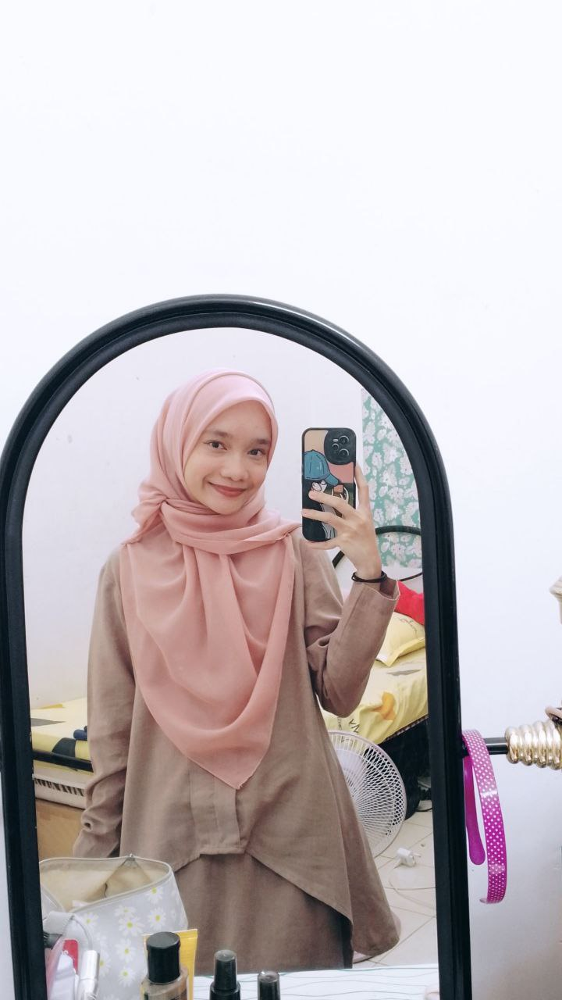
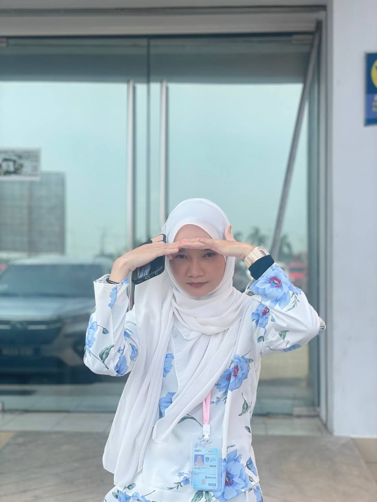
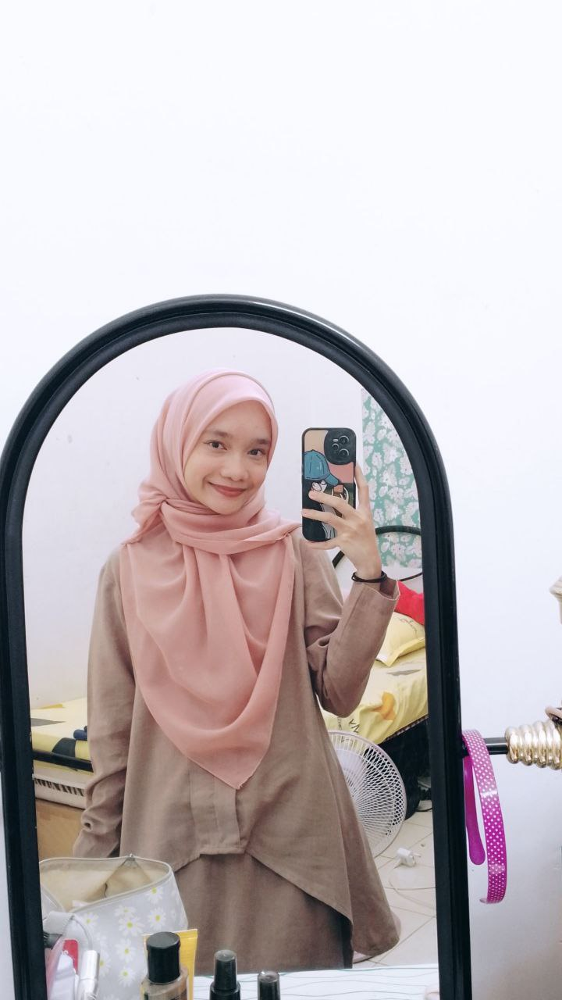
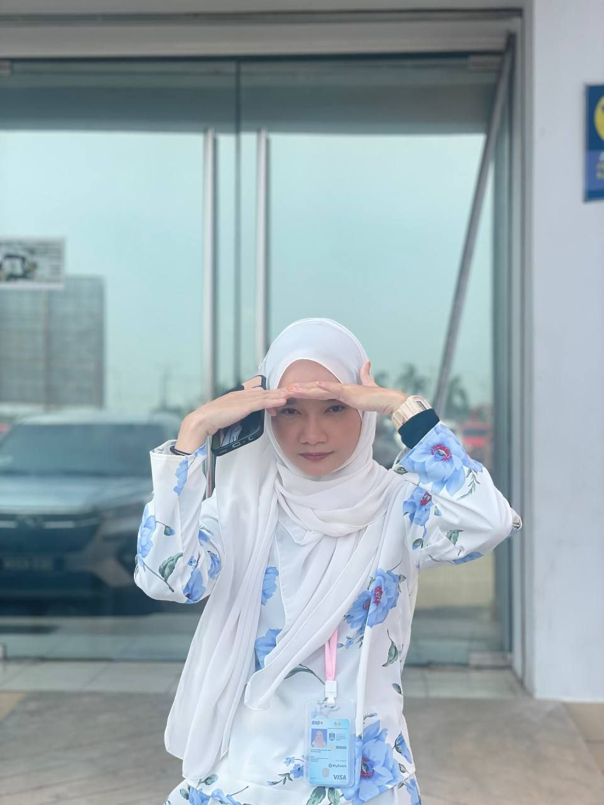
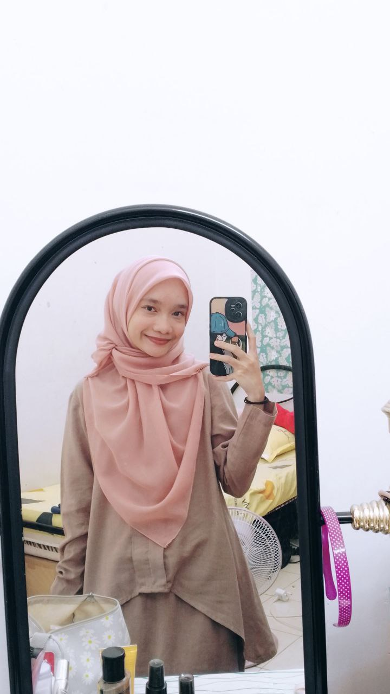
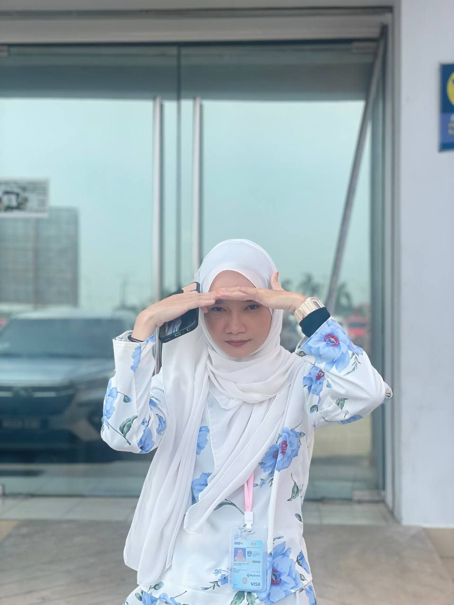

| HOME | MESSAGE | MEMORY |
|---|
OUR MEMORIES
Let's start with how I save your name hehe!
Eh ofcourse la banyak lagi. But i will show you this jela. Takkan aku nak tunjuk semua lak hurm
Ofcourse, thankyou for always never fail tolong aku. This was last sem kan? Even busy, still duk tolong aku. Thankyou !!
7 FEBRUARY 2024
Remember this? Sangat random tiba tiba pegi jalan-jalan kat funfair. And kau pening lepas naik paris wheel tu, remember? HAHAHA takbest langsung Anas nii
9 MARCH 2024
Oh this one. Ofcourse, our tempat wajib, FM! Time ni aku tahu je kau duk snap gambar aku. Aku ni sometimes cepat tangkap, sometimes blur hehe. Tapi aku act cam taknampak jela welk
27 MARCH 2024
This time? Kita iftar kat Tapak Lepak dengan Hanis hehe. Taksilap aku, this was the first time kita ambik gambar berdua dekat cermin kat situ hehe. Ofcourse, lepas tu pegi FM to grab our icecreams
28 MAY 2024
The latest one hehe ! Thankyou for taking the long road, by pretending that you were terlupa nak send aku?? It was smooth, Anas HAHAHA
2 APRIL 2024
First of all, sorry la ek muka camtu. Muka tengah makan hm. I already told you this, tapi taktahu la kau ingat ke tak, since kau kan pelupa hm. This was the first time aku masak untuk orang luar yang lelaki. Before this, aku just masak untuk family & roommates aku je. Kenapa aku masak? Sebab dah suka dik hurm. But malas dah nak masak hehe. Sekali je aaaa. Tapi sedap kan? That was my fav food to eat & cook hihi
MY DELULU
This is a bit embarassing to show. Tapi look at how crazy I am??? Time raya kan famous trend ni, orang duk edit dengan partner dia. Ofcourse, kau je yang aku ada on that time HAHAHA. Tapi no worries. Aku memang tak post, this is only for my gallery hurm. Oh iya, aku tunjuk dekat Hanis this video. Tu jela hehe
12 APRIL 2024


Remember kau bagi that hairband? Ofcourse aku dah ada hairband lain untuk ikat rambut aku. So I just wear it kat tangan je. And since aku dapat tu, aku takpernah bukak dah. Aku pakai je pegi memana. Banyak lagi gambar, tapi takkan aku nak letak semua kan :'
MY NOTES
This was also embarassing and call me crazy for taking notes all of these. Trust me, the smallest thing you did, aku nampak. Tapi ni based on my point of view tau. Idk what was your point of view hehe. Kalau ada yang salah tu, bebuat betul jela ugh